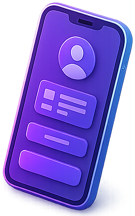

שמתם לב שבאתרים מסוימים הכול פשוט "זורם", ובאחרים אתם מחפשים דקה שלמה את מספר הטלפון? ההבדל הזה נקרא חוויית משתמש (UX) – והוא משפיע ישירות על כמה פניות האתר שלכם מביא.
חוויית משתמש היא כל מה שהגולש מרגיש ועושה באתר: כמה מהר הוא מבין איפה הוא נמצא, כמה קל לו למצוא את מה שחיפש, והאם ברור לו מה הצעד הבא.
עיצוב יפה הוא חלק מזה, אבל לא העיקר. אתר יכול להיות מרהיב ועדיין מתסכל לשימוש. המטרה של UX טוב היא שהגולש לא יצטרך לחשוב – רק להתקדם.
כל כפתור, תמונה או משפט נוסף בעמוד מתחרה על תשומת הלב של הגולש. כשיש יותר מדי, הוא לא יודע במה להתמקד – ולפעמים פשוט עוזב.
אתר עם UX טוב בוחר מה באמת חשוב: מסר מרכזי אחד ברור, תפריט קצר, ופעולה מרכזית אחת שבולטת בכל עמוד – למשל "השאירו פרטים" או "שלחו הודעה בוואטסאפ".
גולש לא נכנס לאתר כדי להסתובב בו, אלא כדי לפתור בעיה. התפקיד של האתר הוא ללוות אותו בדרך: קודם להבין מה אתם מציעים, אחר כך לראות דוגמאות ולקבל ביטחון, ובסוף – לפנות אליכם.
כשהסדר הזה בנוי נכון, הגולש מרגיש שהגיע לפנייה בעצמו, בלי שדחפו אותו.
גם האתר המתוכנן ביותר מאבד מהקסם שלו אם הוא נטען לאט או "נתקע" בלחיצה. גולשים מצפים לתגובה מיידית, במיוחד בנייד.
לכן UX טוב מתחיל כבר בקוד: תמונות מותאמות, אנימציות עדינות שלא מכבידות, וטעינה חכמה של מה שהגולש צריך לראות קודם.
אתר נגיש הוא אתר שכל אחד יכול להשתמש בו: גם מי שמתקשה בראייה, גם מי שגולש עם מקלדת בלבד, וגם מי שמגדיל את הטקסט בטלפון כדי לקרוא.
ניגודיות צבעים טובה, טקסט בגודל קריא, כותרות מסודרות ותיאור לתמונות – פרטים קטנים שעושים הבדל גדול. ובמקרים רבים, נגישות אתרים לעסקים היא גם חובה על פי חוק.
כשהאתר נוח, הגולשים נשארים בו יותר זמן, קוראים יותר ומבינים טוב יותר מה אתם מציעים. וכשהם מבינים – הם גם פונים.
במילים אחרות, שיפור חוויית המשתמש הוא לא רק עניין של נוחות, אלא אחת הדרכים הישירות להגדיל את מספר הפניות מאותה כמות של גולשים.
בקשו ממישהו שלא מכיר את האתר שלכם להיכנס אליו מהטלפון ולנסות ליצור אתכם קשר. אל תעזרו – רק תסתכלו.
אם הוא היסס, חיפש או שאל "איפה לוחצים?" – מצאתם בדיוק את המקום שבו האתר מאבד לקוחות.
חוויית משתמש טובה משלבת פשטות, מהירות, נגישות ותכנון שמוביל את הגולש צעד אחר צעד. כשהיא טובה כמעט לא מרגישים אותה – אבל מרגישים מאוד כשהיא חסרה.